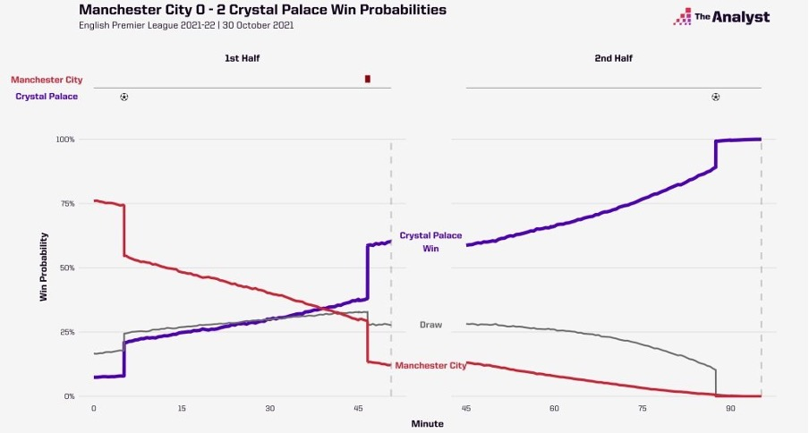
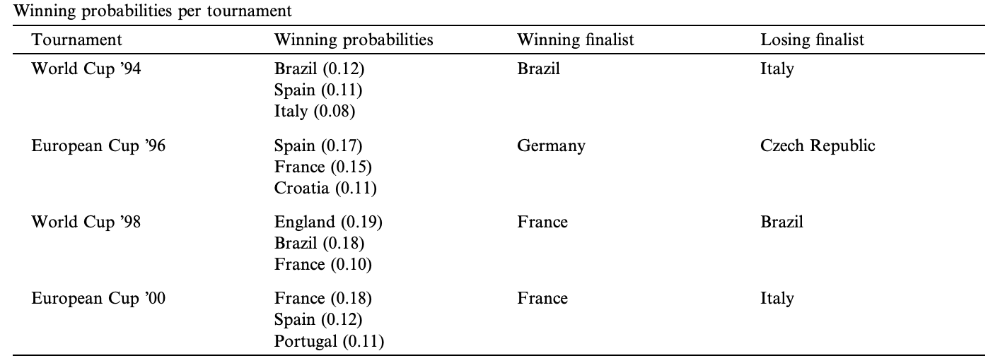

The use of data and artificial intelligence in football
Abstract
In this paper, we discuss the uses of artificial intelligence in football to answer questions such as the operational principles of artificial intelligence in video assistant refereeing (VAR), calculating win or loss probabilities, and simulation of championships, as well as the impact of artificial intelligence on referee decision making. We will also explore the integration of game theory in the tactical element of football.
Introduction
If you ever watched a sporting competition, you may have come across supercomputer win probability statistics for a specific match or competition, and wondered how these probabilities are formulated, as well as their importance. Win probabilities show how impressive it is for a team to win a game or a tournament. An example of this is the most unlikely victory in the premier league where wolves where 2 goals down on the 80th minute, resulting in a win probability below 1 percent, before wolves won the game (Whitmore,2021). You may have also come across decisions made in matches using video assistant referees with the help of semi-automated technologies. This has raised questions such as how artificial intelligence is used in these processes, and the impact this has on decisions made by referees. People have raised questions over the reliability of video assistant refereeing for decision making, and inconsistencies of video assistant refereeing. (Kulkarni, 2024). An example of this is the premier league match between Tottenham vs Liverpool, where a goal from Luis Diaz was ruled out for offside, when the player was not offside. Decisions like this can be made more accurately, and faster by automating things like offside checks. Game theory is the study of mathematical models in strategic interactions. This can be used to explain tactics used by teams, and decisions made by teams in different situations.
win loss probabilities
Live win probability is the changing probability of each match outcome before and during a match. Win loss probabilities are calculated by simulating matches more than a thousand times. The probability of a team scoring at a specific time in a specific simulation is analysed to calculate the final result. These predictions are powered by factors such as historic performance, recent performance, home advantage, in-game performance, red cards, current score, and time remaining. These probabilities may gradually change based on in game factors such as goals, red cards, awarded penalties, missed penalties, and stoppage time. An example of this is shown by figure 1, where at the start of the game, Manchester city where the favourites to win because of their recent performances, but their win probability decreased as the game went on, due to multiple factors like the ones mentioned(Whitmore,2021).

Tournament simulation
The outcome of a match, let alone a tournament is impossible to guess. However, a calculated prediction can be made based on statistics. The same way win probabilities can be used to predict the outcome of a match, similar methods can be used to predict the outcome of tournaments. One model that can be used is the Dutch Werkgroep Voetbal Statistiek model. The model is based on Poisson parameters. This refers to the probability of a given number of events occurring, independent of each other. This was developed to predict the probability of a national team winning a tournament. This measures the expected number of goals in a completed match. This data is used to predict the likelihood of a team winning a tournament. In an international tournament, some teams may have never played each other, resulting in missing data, which must be considered when using the model. As shown in figure 2, the model is reasonably accurate in its predictions. In 1994, Brazil had the highest win probability, and won, with the other finalists having the third highest win probability. Similar results can be noticed for 1998, and 2000, with 1996 being an outlier of results (Koning et al., 2003).

video assistant referee(VAR)
VAR uses 10 cameras across the pitch to have access to 29 locations on each player’s body. All this data is processed by a computer 50 times a second. There is a chip inside the football, that is used to find the location of the ball on a football field, and its movements. The two pieces of data can be combined to find the position of the ball relative to the player’s body. The chip can be used to determine the exact time and location when a ball is in contact with a player using a pulse. This can be used to detect handballs, and call offsides, as well as make many more important decisions. This allows for features such as semi-automated offsides, and fast goal detection, resulting in referees being able to make decisions on a football field in an optimal amount of time. These automations also allow for reduced human error by referees, resulting in less mistakes made by them(Smith, 2024).
Game theory
Game theory is the use of mathematical models for strategic interactions. This can be applied to football to give a team a tactical advantage. It is used to explore players strategic interactions during situations such as penalties, free kicks, and set pieces. For example, when taking a penalty, the model is split into the penalty taker, and the goalkeeper. The kicker can chose between shooting at the centre, the left, or right, and the goal keeper can chose to stay on the centre, or dive left, or dive right. Each player must decide what to do, without knowing what the other player is doing. However, a drawback of this model is interactions in open play are not as easy to model. This is due to 22 players being involved, making it exponentially difficult to model the interactions between them (Tuyls et al., 2021).
Conclusion
However, game theory is only one part of AI research and can be enhanced if complimented with other fields such as statistical learning and computer vision. Statistical learning is using patterns of data to make predictions. Computer vision is teaching AI to understand and identify objects and people. AI has many purposes in football, whether that be to aid referee decisions, help coaches make tactical calls, or to simulate results of a game or tournament. It can be used to improve the quality of the game in multiple ways.
Refrence list
Tuyls, K. et al. (2021) Game Plan: What AI can do for Football, and What Football can do for AI. The Journal of artificial intelligence research.
BBC Sport (2023) AI and Euro 2024: VAR is shaking up football — and it’s not going away. Available at: https://www.nature.com/articles/d41586-024-01764-4
Whitmore, J. (2021) 'Explaining Live Win Probability (LWP)', The Analyst, 30 November. Available at:https://www.bbc.com/sport/football/var-ai-euro-2024
Koning, R. H., Koolhaas, M., Renes, G. and Ridder, G. (Year) 'A simulation model for football championships'